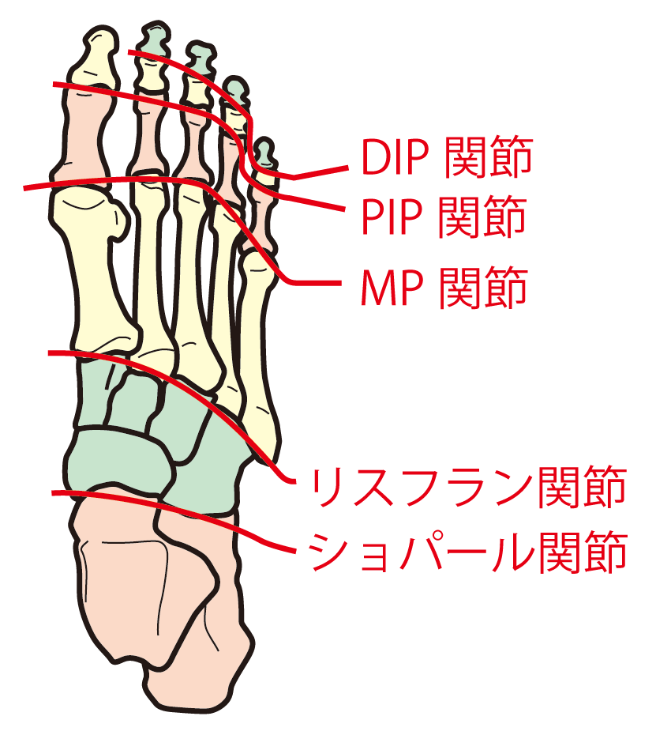

リスフラン靭帯損傷
リスフラン靭帯損傷とは
足の甲の関節であるリスフラン関節にある靭帯が損傷するのが「リスフラン靭帯損傷」です。
リスフラン関節は、足根中足関節です。
内側・中間・外側楔状骨、立方骨と中足骨の間の関節になります。
その中でも、人差し指のリスフラン関節は頂点となる非常に負担の大きな部位です。

症状
体重をかけた際の足の甲の痛み
足の甲を押した際の痛み（圧痛）
足の甲の腫れ
歩行困難となる場合もある
原因
つま先立ちになって踏ん張った際などに上から体重が過度にかかり、足の甲の靱帯を痛めてしまうことが原因です。
つま先で踏ん張るスポーツ（マラソン・サッカー・剣道・スケート・テニスなど）により受傷しやすいです。
交通事故や転倒による直接的な衝撃、ハイヒールの多用や重い荷物の運搬が多いなど、スポーツ以外が原因で受傷することもあります。
診断
レントゲン撮影では、骨が重なり合っている部位のため、角度を変えるなど2方向から撮影して診断します。
場合によっては、CT検査で精密検査を行います。
ただの捻挫と自己判断はせず、きちんと検査を行うことが重要です。
治療
基本的には保存療法です。
約1ヶ月間ギプスで固定し靱帯の修復を行います。
ギプスが外れた後は、テーピングによる固定、型取りした足底挿板（インソール）を用いた歩行訓練、段階的な荷重訓練、筋力や柔軟性の回復を目指したリハビリを行います。